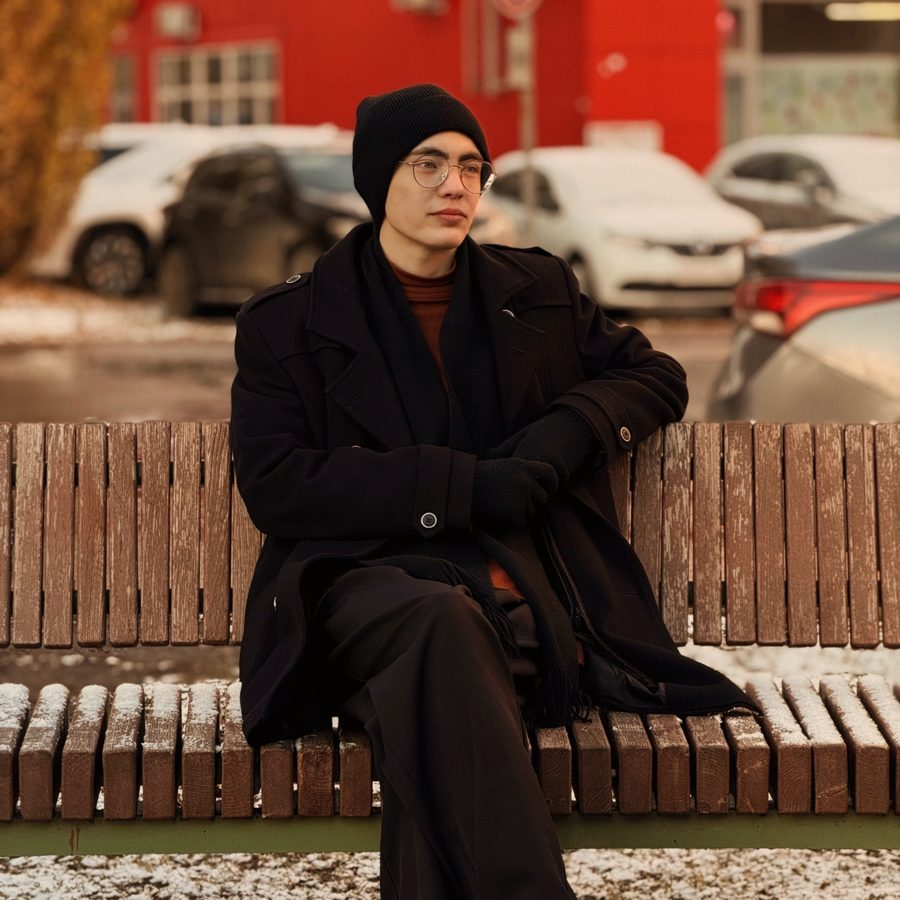

Обо мне
Меня зовут Динислам Пирбобаев. Мне восемнадцать, я студент Месягутовского педагогического колледжа (Дуванский район, Республика Башкортостан), учусь на учителя начальных классов и занимаюсь методикой Super Jump как интеллект-тренер.

Откуда я родом
Я родом из села Верхние Киги Кигинского района Республики Башкортостан. Моя история началась со встречи, в которой есть что-то от чуда: мои отец и мама удивительным, почти волшебным образом встретились на башкирской земле, в уникальном месте, и так на свет появился я — Динислам Пирбобаев. Я живу и расту в Башкортостане, и эта земля стала для меня домом.
Мои корни
Мой отец узбек, и я считаю себя сыном своего рода и своего народа. Эти корни — часть меня. Я хочу, чтобы моим близким и моему народу жилось лучше, и верю, что начинать нужно с себя. Улучшая себя, мы улучшаем весь мир — об этом нам завещал Сократ. Эта мысль стала моей миссией: нести свет в этот мир, прославляя Бога и свой народ.
Мой путь в педагогику
Я учусь в Месягутовском педагогическом колледже и уже вижу себя через десять лет в классе: здороваюсь с детьми, открываю журнал и начинаю урок. Быть мальчиком, который идёт в учителя начальных классов, — необычный выбор, но я считаю его самым сильным вызовом. Нейросети умеют многое, но не смогут обнять расстроенного первоклассника и заметить, как у ребёнка впервые получилась буква «А». Моя цель — зажечь в каждом ребёнке огонёк любопытства, чтобы он не боялся ошибаться, задавать вопросы и мечтать. Будущее начинается за партой, с первого «здравствуйте».
Писатель во мне
Я люблю писать. Эссе и заметки для меня — способ думать вслух: о том, кем я стану через десять лет, почему иду в учителя, что подарила мне поездка в Москву. Слово — главный инструмент учителя, и я учусь им владеть. С текста часто начинается мой путь: в отборе «Первого студенческого» нужно было написать эссе. Я пишу так, как говорю: просто и честно. Мне важно, чтобы слова поддерживали человека и помогали ему сделать следующий шаг.
Чем я занимаюсь
- Учусь в педагогическом колледже и участвую в студенческом движении: «Движение Первых», студенческий педагогический отряд «Звёздный».
- Помогаю проводить студенческие мероприятия, например «Квартирник Первых» для первокурсников.
- Веду личную страницу ВКонтакте и Telegram-канал.
Достижения
- Ноябрь 2026: финалист Всероссийского проекта «МедиаПритяжение» в направлении «МедиаПрофи» (Москва, 11–13 ноября), где представлял Республику Башкортостан и Дуванский район. Путь к финалу начался с онлайн-задания: нужно было снять видеоролик на заданную тему. В Москве мы работали в коммуникативных агентствах и готовили питчинг «Коммуникационная стратегия 2027».
- Сентябрь 2025: в составе команды колледжа вышел в региональный этап проекта «Первый студенческий».
- Участник республиканского слёта председателей и активистов «Движения Первых» в парке «Патриот».
Super Jump
В Super Jump я нашёл то, что созвучно моим ценностям: развитие каждый день и поддержка тех, кто рядом. Что дают упражнения.